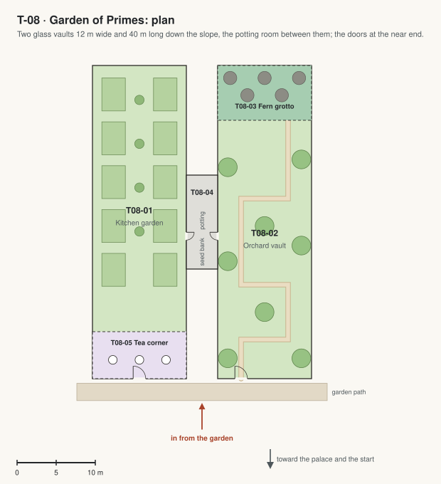

T-08 · Garden of Primes
Two glass vaults full of real plants on the east side of the garden domes, joined to them by a link.

| Code | Room | What it is for | Size |
|---|---|---|---|
| T08-01 | Kitchen garden | The vault on the garden side: raised beds of vegetables and herbs for Café π, lettuce towers under grow lights. Also: Biology classes. | 410 m² |
| T08-02 | Orchard vault | The outer vault: citrus, figs and olives in big tubs, a path that turns at prime numbers of steps. Also: A quiet place to read. | 400 m² |
| T08-03 | Fern grotto | The far end of the orchard vault: ferns and moss over rocks, misted, cool. | 84 m² |
| T08-04 | Potting room and seed bank | Between the vaults, with a door into each: benches for potting, drawers of seeds, tools. | 48 m² |
| T08-05 | Tea corner | The near end of the kitchen garden: a few tables among the herbs. | 72 m² |